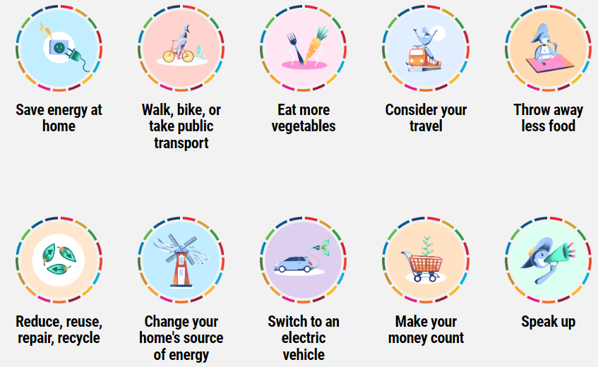
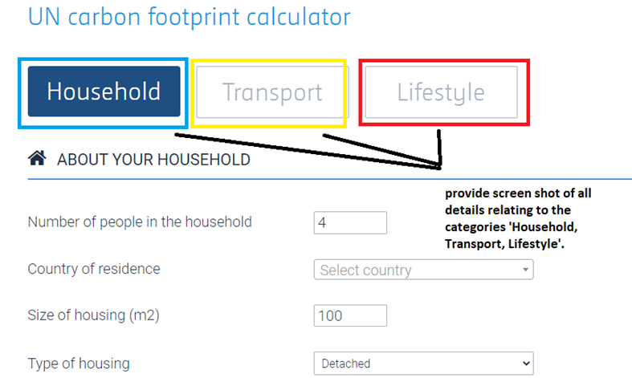

Project SDG Website
Assessment 3
INSTRUCTIONS to update the table:
To edit text, type directly in the cells
To add/remove cells, click on the table and use the table options that appear
Assessment Overview
| Overview | Length or Duration | Worth | Due |
|---|---|---|---|
|
Assessment 3 is a group related project, researching the opportunities to achieve SDGs. Consider the SDG information and knowledge acquired from the many related articles and support videos presented during this unit’s delivery, and utilize this information to guide and assist in the design and solution of the assessment tasks. |
N/A |
35% |
Week 15 |
Instructions
Instruction 1 - 10 Marks Total
-
Design a ‘Home’ page, (all group members must contribute to the design of the page layout) – 2 marks
-
Briefly state the UN’s Sustainable Development Goals (SDGs) agenda, also listing the 17 goals – 4 marks
-
Briefly explain ‘Why the world would need the UNs SDGs guidance’? - 4 marks
-
(Note: provide citations/referencing – APA 7th Style, for all sourced information, and list this citation in a Reference List, a separate webpage named as such – ‘Reference List’)
Instruction 2 - 5 marks in total
-
-
Design an ‘About Us’ page (all group members must contribute in the design of the page layout).
-
Each member must provide their own design solution within the ‘About Us’ page, including:
-
Team Member photo – 2 marks
-
Brief self-description, including:
-
Name – 1 mark
-
background – 1 mark
-
future vocation aspirations – 1 mark
-
-
-
Instruction 3 - 30 marks in total
The theme of ‘Instruction 3’ is for each team member to select a different ‘SDG Goal’, and also, the type of ‘adverse impact/effect’ the nation is currently dealing with, as it relates to the SDG Goal selected.
-
-
Design a ‘SDG 17 Goals’ page (all group members must contribute to the design of the page layout). – 2 marks
-
Each member must select, research and report on ONE of the ‘17 Goals’, (i.e. There can be no repeat of ‘SDG GOALS’ amongst the team members);
-
performing the following:
-
Give a brief explanation about the purpose of the SDG goal. – 3 marks
-
Research and explain ‘what adverse impact the nation is currently dealing with’, as it relates to the ‘SDG Goal’ you selected, answering the ‘why, how and/or who’, which was/is the cause of the adversity currently impacting society or nation. – 10 marks
-
Provide a personal response, explaining the steps of ‘how and/or what’ you would need to do to rectify the nations adverse situation, to bring about the required ‘change’ to improve the state of the society / nation from ‘adversity’ to ‘prosperity’. – 15 marks
-
-
(Note: provide citations/referencing – APA 7th Style, for all sourced information, and list this citation in a Reference List, a separate webpage named as such – ‘Reference List’)
-
Instruction 4 - 55 marks in total 
To preserve a liveable climate, the average emissions per person per year will need to drop to around 2 tons of CO2e by 2030. The UNs SDGs provide guidance to meet this target, starting with the ‘Ten Actions’ to help tackle the climate crisis:
-
-
Design an ‘SDG Act Now’ page (all group members must contribute to the design of the page layout). – 2 marks
-
Briefly explain as a group, the understanding of what a ‘Carbon Footprint’ is? – 4 marks
-
Reviewing each of the Ten Actions (listed above), each team member must select and then report on ONE of these ‘Ten Actions’, performing the following (i.e. There can be no repeat of ‘Actions’ amongst the team members);
-
For the ‘Action’ in question, each team member is to explain the purpose of the ‘Action’. – 4 marks
-
Each team member is to calculate their own individual carbon footprint, using a ‘carbon footprint calculator’ tool of your own choice (i.e. research the internet for this tool, making certain to list this source information (i.e. reference) on the page). You must provide evidence, as an image – screenshot, for every process step in the use of this tool, (i.e. example ‘carbon footprint calculator tool’ highlighted below) in the calculation of your carbon footprint figure. – 20 marks

-
Each team member is to provide three ‘carbon offset’ solutions (i.e. three brief explanations), as a response to reducing your own individual carbon footprint as it relates to the ‘Action’ (i.e. a way to compensate for your emissions by funding an equivalent carbon dioxide saving elsewhere). Further, there must be a personalised accompanied photo, as evidence in support of the solution ‘explanations’, (e.g. For ‘Eating more vegetables’ theme, first explain the purpose of the ‘Action’, then do the calculation and provide a solution (i.e. the three steps) as to how you intend to reduce the carbon footprint, then finally, provide a photo of oneself – FACE / HEAD SHOT REQUIRED - eating a carrot). – 25 marks
-
-
(Note: provide citations/referencing – APA 7th Style, for all sourced information, and list this citation in a Reference List, a separate webpage named as such – ‘Reference List’)
-
Submission Instructions
Please submit your completed assessment electronically via the Assessment 3 Dropbox